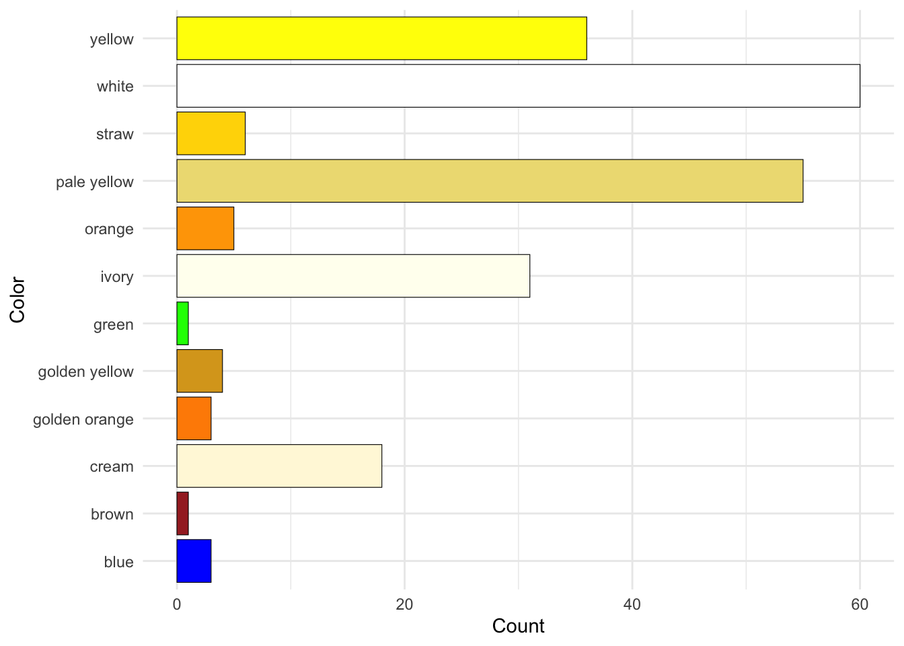
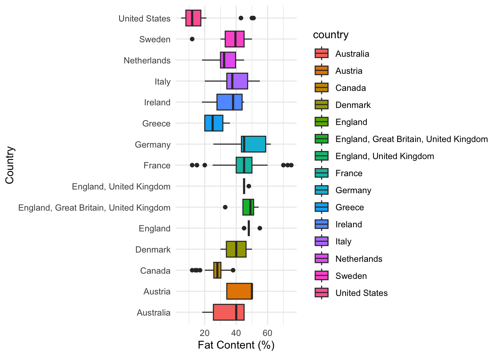

3 Result
This results section delves into the multifaceted world of cheese, presenting an exploratory analysis of its diverse attributes, including milk type, cheese family, region, texture, flavor, and other key characteristics. Through a combination of insightful visualizations and data-driven observations, the analysis uncovers patterns and relationships that shape the production, classification, and appeal of cheeses worldwide. By leveraging statistical and visual techniques, the results offer a comprehensive overview of cheese diversity, highlighting connections between traditional practices, regional preferences, and innovative trends in the industry. These findings not only enhance our understanding of cheese as a culinary and cultural artifact but also provide practical insights for producers, consumers, and enthusiasts alike.
3.1 Distributions
3.1.1 Distribution of Milk Types
To explore the diverse origins of cheeses, we begin by analyzing the types of milk used in their production. Understanding the distribution of milk types offers insights into global cheese production trends and highlights the prominence of certain milk sources in shaping consumer preferences and culinary practices.
The bar chart underscores the global dominance of cow’s milk in cheese production, with a significantly higher count compared to other milk types. Goat and sheep milk emerge as notable alternatives, often used independently or in combination, reflecting their popularity in specific regions or among niche markets. Meanwhile, rarer milk types, such as camel, moose, and water buffalo, point to their use in specialty or regional cheeses. This analysis provides a clear overview of the reliance on cow’s milk for large-scale production while acknowledging the diversity brought by alternative milk sources, which cater to unique consumer demands.
3.1.2 Top 20 Regions Producing Cheese
To uncover the geographic dynamics of cheese production, this analysis focuses on the top 20 regions with the highest diversity of cheese types. Understanding these regions can reveal the cultural and industrial hubs where cheese-making thrives, highlighting both traditional expertise and modern production capabilities.

The bar chart reveals Quebec as a dominant player in global cheese production, far surpassing other regions. Sulzberg and South Australia follow, showcasing significant cheese-making activity, likely supported by strong dairy industries and traditional knowledge. Regions like Gujarat, Prince Edward Island, and Piedmont also contribute notably, reflecting their focus on unique or regionally significant cheese varieties.
Smaller regions such as Oviken, Inagh (Co Clare), and Colorado indicate niche expertise, emphasizing their specialization despite producing fewer overall types of cheese. The inclusion of geographically broad regions like Bregenzerwald and Macedonia suggests that cheese production can be highly decentralized within these areas, with multiple contributors adding to their diversity.
This visualization underscores the global diversity in cheese-making, identifying key regions that dominate while acknowledging the contributions of less prominent locales. Such insights are crucial for understanding the interplay between regional expertise, cultural significance, and industrial-scale production in shaping the cheese industry.
3.1.3 Top 10 Cheese Producers
Cheese production is a globally diverse industry, with contributions from artisan makers, large-scale manufacturers, and cooperatives. This visualization highlights the top 10 producers by the number of cheese varieties they produce, showcasing their impact and influence in the market.

The chart places La Maison Alexis de Portneuf Inc. at the forefront, reflecting its extensive contributions to the cheese industry with a wide variety of offerings. This prominence indicates its global reputation and the ability to cater to varied consumer preferences.
Other key players, such as Woodside Cheese Wrights and Sulzberger Käserebellen Sennerei GmbH, underline the importance of regional expertise and specialization in driving their success. Producers like Vandersterre Groep International B.V. and Gujarat Cooperative Milk Marketing Federation (Amul) highlight the global nature of cheese production, bridging traditional Western markets and emerging regions like India.
The diversity in the producer landscape—from cooperatives to private companies—illustrates the dynamic interplay between tradition, innovation, and scale in cheese-making. These top producers collectively shape the cheese industry by offering a broad spectrum of products, catering to both local and international markets.
3.1.4 Top 15 Countries Producing Cheese
Cheese production is deeply rooted in cultural traditions and industrial capabilities, varying significantly across countries. This bar chart highlights the top 15 cheese-producing nations, providing insights into their contributions to global cheese diversity.

The chart underscores France’s leadership in cheese production, far exceeding other countries. France’s prominence reflects its rich cheese-making heritage, renowned for producing a diverse array of high-quality cheeses that set global standards.
Canada, the United States, and Italy follow as major contributors, showcasing their robust cheese industries that blend traditional methods with modern innovation to cater to diverse markets. Countries such as Australia, Austria, and Germany also feature prominently, highlighting their established presence in the global cheese trade.
Smaller producers like Sweden, Ireland, Greece, and Denmark bring unique and niche cheese varieties to the market, enriching the global landscape with distinct flavors and techniques. However, the presence of inconsistent entries for the United Kingdom (e.g., “England, United Kingdom” and “England, Great Britain, United Kingdom”) suggests the need for improved data standardization to ensure accurate representation.
This analysis not only emphasizes France’s dominance but also highlights the global diversity and regional specialties that define the cheese industry. The findings provide a lens into the cultural and industrial factors shaping cheese production worldwide.
3.1.5 Distribution of Rind Types
The rind type plays a significant role in cheese production, influencing its texture, flavor profile, and aging process. By analyzing the distribution of rind types, this visualization aims to reveal trends in production techniques and consumer preferences, highlighting the interplay between tradition and innovation in cheese-making.
The chart highlights the dominance of natural rind types, emphasizing the widespread appeal of traditional and minimally processed cheeses. This preference likely reflects consumer appreciation for artisanal qualities and the authentic flavors they impart. Washed rinds, ranking second, underline the popularity of techniques that enhance flavor complexity through the application of brine or other liquids during maturation.
Rindless cheeses, in third place, suggest a significant demand for smooth and uncomplicated options, often catering to those preferring milder flavors or industrially produced varieties. Further down the list, bloomy and mold-ripened rinds highlight the timeless appeal of soft-ripened cheeses like Brie and Camembert, known for their creamy textures and edible exteriors.
Specialized rind types such as waxed, artificial, leaf-wrapped, ash-coated, and cloth-wrapped showcase the diversity of cheese-making traditions and the push for aesthetic or innovative products in niche markets. At the other end of the spectrum, plastic rinds, with their industrial associations, reflect limited demand in favor of more natural or artisanal options.
This analysis underscores how rind types serve as a bridge between the cultural roots of cheese production and modern consumer trends, showcasing the varied techniques that shape the global cheese market.
3.1.6 Distribution of Cheese Colors
Cheese colors serve as a defining characteristic that not only impacts consumer perception but also reflects the cheese-making process and ingredients used. This analysis explores the variety of colors found in cheeses, providing insights into both traditional and artisanal production methods.
Code
library(ggplot2)
library(dplyr)
# Filter out NA values in the color column
cheeses_clean_filtered <- cheeses_clean %>%
filter(!is.na(color))
# Define a mapping of color names to their actual colors
color_mapping <- c(
"yellow" = "yellow",
"white" = "white",
"straw" = "gold",
"pale yellow" = "lightgoldenrod",
"orange" = "orange",
"ivory" = "ivory",
"green" = "green",
"golden yellow" = "goldenrod",
"golden orange" = "darkorange",
"cream" = "cornsilk",
"brown" = "brown",
"blue" = "blue"
)
# Create the bar chart with corresponding colors and a border
ggplot(cheeses_clean_filtered, aes(x = color, fill = color)) +
geom_bar(color = "black", size = 0.2) + # Add black border around bars
coord_flip() +
scale_fill_manual(values = color_mapping) + # Map color names to actual colors
labs(
x = "Color",
y = "Count"
) +
theme_minimal() +
theme(legend.position = "none") # Remove the legend for a cleaner lookWarning: Using `size` aesthetic for lines was deprecated in ggplot2 3.4.0.
ℹ Please use `linewidth` instead.
The bar chart illustrates a broad spectrum of cheese colors, with “pale yellow” and “ivory” emerging as the most prevalent hues. These colors are often associated with mild, creamy cheeses such as Gouda, Brie, and Cheddar, which are widely popular across diverse markets. Their dominance reflects their broad appeal and versatility in culinary applications.
Other significant colors like “yellow” and “white” reinforce the preference for classic, clean-looking cheeses, signifying tradition and simplicity in production. Shades like “straw” and “cream” offer subtle variations that likely represent specialty or artisanal varieties, appealing to more refined tastes.
Less common colors, including “blue,” “green,” and “brown,” represent unique cheeses like blue cheese or certain mold-ripened types. These artisanal or region-specific varieties cater to niche markets, emphasizing bold flavors and distinctive appearances.
The inclusion of “golden yellow” and “golden orange” highlights richer, more intense varieties often associated with gourmet selections or aged cheeses. This visualization captures the diversity of cheese aesthetics, showcasing how color reflects both mainstream and niche preferences, as well as the creativity embedded in cheese-making traditions.
3.2 Sensory Attributes
3.2.1 Different Aromas of Cheeses
Aroma is a defining characteristic of cheese that greatly influences consumer perception and preference. This word cloud visualizes the diverse range of aromas described for cheeses, offering an overview of the sensory experiences associated with different varieties.
The word cloud highlights key aroma descriptors, with “aromatic,” “fresh,” and “rich” being the most prominent, indicating their frequent association with popular cheese types. These terms suggest a preference for cheeses with distinct yet appealing scents that enhance their overall sensory profile.
Other common descriptors, such as “nutty,” “strong,” and “pleasant,” reflect the balance between robust flavors and enjoyable aromas that many consumers seek. Meanwhile, words like “earthy,” “buttery,” and “fruity” point to nuanced sensory experiences that cater to diverse tastes and regional traditions.
Less frequent but noteworthy terms like “pungent,” “smokey,” and “spicy” underline the niche appeal of cheeses with bold or unique aromatic qualities. These varieties are often prized by enthusiasts for their complexity and intensity.
This visualization captures the intricate interplay between aroma and cheese appreciation, emphasizing its critical role in shaping consumer preferences and distinguishing different cheese styles. By understanding these descriptors, producers can better align their products with market demands and regional preferences.
3.2.2 Different Textures of different cheeeses
Texture is a critical sensory attribute that influences the appeal and classification of cheese. This word cloud visualizes the most frequently described textures across various cheeses, offering insights into the diverse tactile qualities that define this beloved food.

The word cloud highlights dominant texture descriptors such as “creamy,” “soft,” and “firm,” reflecting their widespread appeal and prevalence in popular cheese varieties. These textures suggest a preference for cheeses with smooth, pliable, or robust tactile qualities, catering to a broad audience.
Other descriptors like “crumbly,” “smooth,” and “dense” point to distinct textures that differentiate cheeses, showcasing the diversity of production techniques and styles. Words like “buttery,” “grainy,” and “supple” reflect nuanced tactile experiences, emphasizing the role of texture in elevating cheese from a functional food to a sensory delight.
Less common terms like “springy,” “chalky,” and “flaky” highlight niche textures, often associated with specific or artisanal varieties. These textures cater to enthusiasts seeking unique tactile and sensory experiences.
This visualization underscores the richness and variety in cheese textures, revealing how tactile qualities contribute to the identity and appeal of cheeses across regions and cultures. Producers can leverage these insights to align their products with consumer preferences and market trends.
3.2.3 How does it taste?
Taste is a key aspect of cheese that defines its identity and appeal. This word cloud visualizes the most frequently mentioned flavor descriptors in the dataset, showcasing the wide range of sensory experiences that cheeses offer.

The word cloud highlights dominant flavor descriptors such as “mild,” “nutty,” “buttery,” and “sweet,” reflecting their widespread appeal across various cheese types. These flavors suggest consumer preferences for cheeses with balanced and approachable taste profiles.
Other prominent terms, such as “salty,” “creamy,” and “tangy,” underline the diversity in flavor profiles, catering to both traditional and adventurous palates. Words like “spicy,” “earthy,” and “acidic” indicate niche or bold flavors that attract enthusiasts seeking unique sensory experiences.
Less frequent but notable descriptors such as “garlicky,” “herbaceous,” and “smokey” point to specialized or artisanal varieties that emphasize creativity and regional traditions. These terms highlight the complexity and innovation in modern cheese-making.
This visualization captures the vast array of flavors that define cheese, emphasizing its versatility and ability to cater to diverse preferences while maintaining its timeless appeal as a sensory delight.
3.3 Relationships and Interactions
3.3.1 Fat Content Distribution Across Top Cheese-Producing Countries
Fat content is a key attribute that influences the flavor, texture, and richness of cheese. This boxplot explores the variation in fat content across cheeses produced in the top cheese-producing countries, offering insights into regional production standards and preferences.

The boxplot reveals notable differences in fat content distributions among countries. Australia exhibits the widest range, reflecting a diverse cheese portfolio with varying fat levels. In contrast, Austria and France show tighter interquartile ranges, suggesting consistency in production standards and a focus on specific cheese types.
Countries like Greece, Ireland, and Italy exhibit narrower distributions, indicating a preference for cheeses with relatively consistent fat content levels. Outliers are observed in multiple countries, such as France and the United States, highlighting unique or specialty cheeses that deviate from the norm, either with exceptionally high or low fat percentages.
The presence of redundant entries for the United Kingdom (e.g., “England, United Kingdom” and “England, Great Britain, United Kingdom”) points to a need for data standardization to ensure accurate comparisons. Overall, this visualization highlights the diversity in cheese production styles and regional preferences, reflecting the interplay between tradition, consumer demand, and innovation in cheese-making.
3.3.2 Correlation Matrix
Understanding the relationships between various attributes of cheese can provide deeper insights into the factors influencing production, classification, and consumer preferences. This correlation matrix visualizes the strength and direction of relationships between numeric features in the dataset.
corrplot 0.95 loadedThe matrix reveals several key correlations. Notably, a strong positive correlation (0.78) exists between alt_spellings and synonyms, indicating consistent recording of alternative names or spellings for cheeses. This ensures comprehensive data entries, aiding in better classification and searchability.
Another significant observation is the moderate positive correlation (0.38) between fat_content and texture. This suggests that fat content plays a notable role in shaping a cheese’s texture, with higher fat levels often contributing to creamier or softer textures. Similarly, sensory attributes such as aroma and flavor show weak but positive correlations with fat content (0.15 and 0.16, respectively), hinting at the impact of fat on enhancing sensory richness.
A weak negative correlation (-0.26) between region and family highlights the diversity of cheese families across regions, suggesting that some regions specialize in specific cheese families while others offer a broader range.
Interestingly, calcium content demonstrates minimal correlations with other factors, reflecting its consistency across cheese types regardless of family or region. Additionally, the weak correlations for country suggest that national origin alone does not strongly dictate cheese attributes, underscoring the influence of producers and families in defining characteristics.
Overall, this matrix highlights both expected and nuanced relationships among cheese attributes, offering a foundation for deeper exploration into the factors driving cheese diversity and appeal.
3.3.3 Interaction Between Milk and Cheese Type
Milk type and cheese category are critical factors influencing the fat content and overall profile of cheese. This interaction plot visualizes the relationship between these variables, highlighting trends and variations across different milk sources and cheese types.

The plot reveals that cow milk cheeses exhibit a wide range of fat content, showcasing their versatility across various cheese categories. In contrast, camel milk cheeses display more consistency, reflecting the uniformity of fat content in camel milk-derived products. Goat and sheep milk cheeses cluster around mid-range fat content, suggesting their shared characteristics despite originating from different sources.
Buffalo milk cheeses consistently exhibit higher fat content, emphasizing the natural richness of buffalo milk and its impact on cheese composition. Moose milk cheeses stand out with distinct fat content levels, highlighting their rarity and unique properties compared to other milk sources.
The overlapping dashed lines indicate similarities in fat content across certain cheese types made from different milk sources, suggesting that production techniques also play a significant role in shaping fat content. Deviations in some combinations underscore how cheese-making methods can influence the nutritional profile of the final product.
This visualization provides valuable insights into how milk type interacts with cheese categories to shape fat content, pointing to opportunities for further research into optimizing cheese production for specific consumer preferences and nutritional requirements.
3.3.4 Synonyms of Cheese
Cheese is a global culinary staple with diverse names and labels that reflect its cultural and regional roots. This word cloud visualizes commonly occurring synonyms associated with cheeses, providing insights into the linguistic and branding aspects of cheese varieties across the world.

The word cloud reveals the most frequently used synonyms, with “cheese,” “de,” and “dop” standing out prominently. These terms reflect common linguistic patterns, such as “de” in European languages and “dop” (Denominazione di Origine Protetta) indicating protected designation of origin, often linked to traditional cheeses.
Other notable terms like “kaas,” “queijo,” and “fromage” represent translations of “cheese” in Dutch, Portuguese, and French, highlighting the cross-cultural representation of cheese terminology. Words such as “aged,” “blue,” and “fresh” emphasize descriptive labels tied to production methods and flavor profiles, underlining their importance in cheese marketing and classification.
Regional identifiers, including “bavaria,” “pecorino,” and “mozzarella,” point to geographical or cultural origins that carry strong brand recognition. The inclusion of niche descriptors like “fresco,” “creamy,” and “smoked” reflects the diversity in cheese types and the specific characteristics valued by consumers.
This visualization provides a linguistic snapshot of the cheese industry, showing how synonyms serve not only as descriptors but also as markers of tradition, quality, and authenticity in the global cheese market.
3.4 Comprehensive Analyses
3.4.1 Cheese Production Diversity by Country
Cheese-making is a global art, with each country contributing unique styles and flavors. This treemap visualizes the diversity of cheese production across nations and highlights the representation of various cheese families, offering insights into global trends and regional specializations.

The treemap showcases the dominance of cheese powerhouses like Canada, France, and Italy, known for their rich cheese-making heritage and diversity. These countries excel in producing a wide variety of cheese families, including Cheddar, Brie, and Camembert, underscoring their global influence.
Regional specialization is evident in countries like Switzerland and Great Britain, which focus on fewer but highly distinctive cheese families. This highlights their commitment to preserving artisanal and specialty cheese traditions, catering to niche markets.
Emerging players such as India and Australia are also represented, signaling their growing roles in the global cheese industry. Their presence points to increasing international demand and innovation in cheese-making practices.
Overall, the treemap emphasizes the global spread and diversity of cheese production, showcasing how traditional hubs and emerging markets together contribute to the richness of this industry.
3.4.2 Cheese Family Diversity
Cheese families categorize varieties based on shared characteristics, such as texture, flavor, or production methods. This treemap provides a visual breakdown of the distribution of cheese families in the dataset, highlighting their relative prevalence and diversity.

The treemap reveals that “Brie” and “Blue” cheeses dominate, each with the highest count of 14. These popular families are known for their distinct textures and flavors, appealing to both traditional and adventurous palates. Their prominence reflects their global popularity and widespread production.
“Cheddar” and “Gouda” follow, with 11 and 8 entries, respectively, emphasizing their strong market presence and versatility in both artisanal and industrial contexts. Meanwhile, families like “Swiss Cheese” and “Camembert” showcase the enduring appeal of classic varieties known for their regional heritage.
Smaller cheese families, such as “Pecorino,” “Tomme,” and “Havarti,” represent niche or regional specialties that cater to specific markets and tastes. The presence of diverse but less common families highlights the richness and complexity of the cheese world, driven by both tradition and innovation.
This treemap captures the breadth of cheese families, reflecting consumer preferences for a mix of mainstream and specialized options while showcasing the global diversity of cheese production.
3.4.3 Cheese Families and Their Types
Cheese families and their types are foundational to understanding the diversity and specialization within the cheese industry. This alluvial diagram highlights the connections between cheese families and the types they represent, providing a comprehensive view of their distribution and relationships.
The diagram highlights the prominence of well-known cheese families such as Blue, Brie, and Cheddar, which are strongly associated with specific cheese types. These families emphasize their universal appeal and recognition in both traditional and modern cheese-making practices.
Hard and semi-hard cheese types dominate across multiple families, reflecting their versatility and widespread culinary applications. Their broad appeal underscores their adaptability to varying consumer preferences, making them staples in global cheese production. Conversely, families like Swiss Cheese and Pasta Filata stand out for their strong association with unique, regionally significant cheese types, showcasing the influence of cultural traditions.
The diversity within families such as Camembert and Mozzarella is evident, as they connect to multiple cheese types. This adaptability speaks to their ability to cater to diverse markets, highlighting their dynamic role in cheese-making.
The diagram’s interconnected structure reveals the intricate relationships within the cheese world. Overlapping pathways between families and types illustrate shared characteristics, emphasizing the complexity and creativity embedded in the cheese-making process. This visualization not only celebrates the richness of cheese traditions but also highlights opportunities for innovation and further exploration.
3.4.4 Cheese Characteristics Alluvial Diagram
This alluvial diagram showcases the intricate relationships among key attributes of cheese: milk type, cheese family, region, and cheese type. By visualizing these connections, we can uncover patterns that reflect the diversity and complexity of global cheese production.

The diagram highlights the central role of cow milk in cheese production, as its flows dominate the visualization, connecting to a wide variety of cheese families such as Cheddar, Brie, and Gouda. This underscores the adaptability and versatility of cow milk in producing cheeses that cater to diverse tastes and culinary uses. In contrast, milk types like goat, sheep, and water buffalo exhibit narrower but more specialized connections, reflecting their unique regional significance and niche appeal.
Distinct associations between cheese families and regions are evident. For instance, Swiss Cheese and Pasta Filata are strongly linked to specific regions, emphasizing their traditional production roots. Families like Feta also show a clear regional preference, highlighting their cultural importance and specialized production methods.
When it comes to cheese type, hard and semi-hard textures dominate, with strong connections to multiple milk types and cheese families. These types represent staple textures in cheese production, appealing to a broad audience. On the other hand, softer and artisan varieties, such as blue-veined or brined cheeses, are more closely associated with goat and sheep milk, showcasing their artisanal and regional exclusivity.
The interconnected flows in the diagram vividly illustrate the balance between traditional methods and modern versatility in cheese-making. By examining these relationships, the visualization provides valuable insights for culinary innovation, market expansion, and preserving the cultural heritage of cheese production.